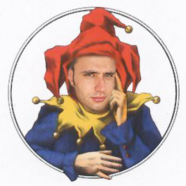

Poichè la monotonia di Vito Novemanelli è cosa risaputa: le risposte che dà sono sempre le stesse,
sono standard e ciclicamente le ripete anche quando
non avrebbe senso dirle e/o scriverle. Vi do la possibilità di chattare 24 ore su 24 con lui.
Scrivete ciò che volete, riceverete una sua risposta random. Non noterete differenze con la sua controparte
umana, tanto le
cazzate sono sempre le stesse.
Istruzioni per la chattata: le sue risposte sono state suddivise in tre categorie:
- quando pensa di aver zittito qualcuno (non bisogna scrivere nessun messaggio).
Attualmente ci sono risposte. - quando qualcuno ha scritto un lungo messaggio (scrivere almeno 20 caratteri).
Attualmente ci sono risposte. - tutte le risposte che non rientrano nelle categorie precendenti (basta scrivere un carattere).
Attualmente ci sono risposte.
Scrivi un messaggio

...zzzz....zzzz!!!